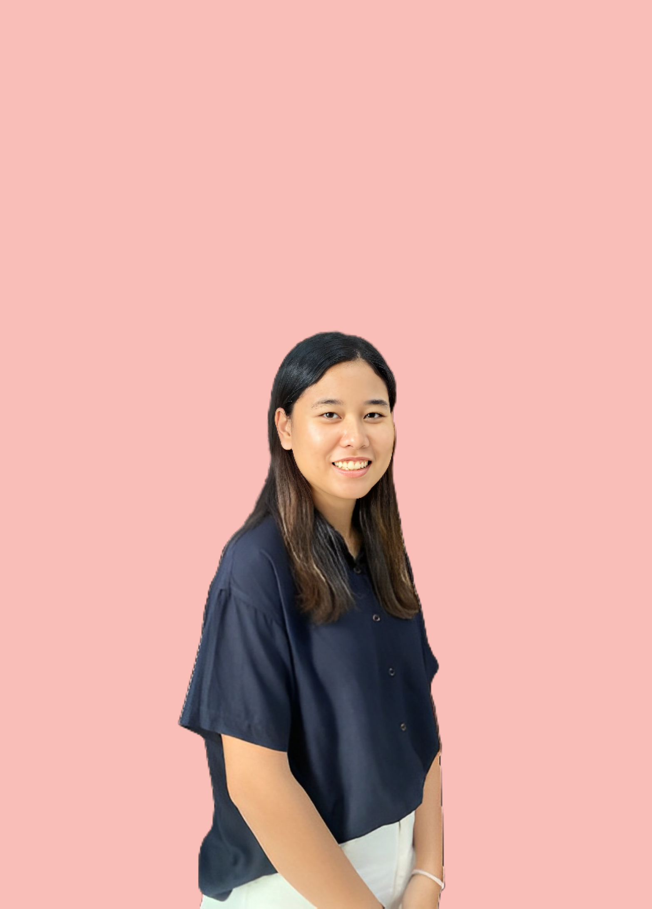

Hello, i’m Miranda
Hello, I'm Miranda, currently pursuing a bachelor's degree in computer science at Universitas Sumatera Utara (USU) with a GPA of 3.81. Meticulous, collaborative, and dedicated, my passion lies in UI/UX. Proficient in various tools, I seek opportunities to enhance my skills, create meaningful user experiences, and stay ahead in this dynamic field.